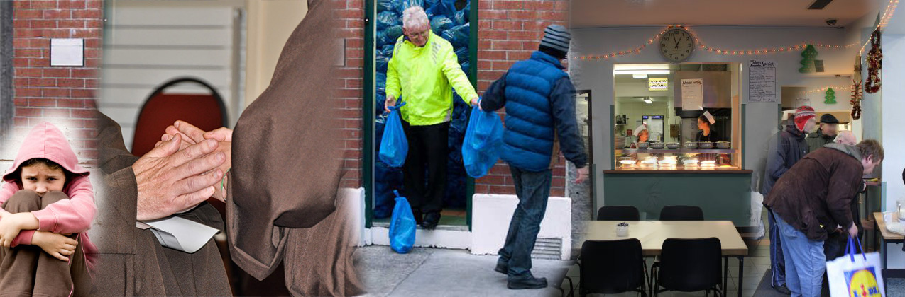

Services
In keeping with the spirit of St. Francis (known as the Father of the Poor) there is no charge for any of the below services.
Food Service
- Monday to Saturday inclusive (including Bank Holidays)
- Breakfast served each day 9.00 – 11.30 am
- Lunch served each day 1.00 – 3.00 pm
Food Parcels
- Distributed every Wednesday morning from 9.00 to 11.30 am.
Family Facilities
- We have a designated family area where families can enjoy a nutritious meal in comfort and safety.
Clothing
- Distributed when available.
Showers
- Shower Facilities and fresh underwear and personal hygiene products. With the exception of Wednesday morning. Showers and fresh underclothing are available each morning from 9.00 to 11.30 am.
Advocacy
- Friendship, Advocacy and general social supports are provided as far as possible.
Clinics